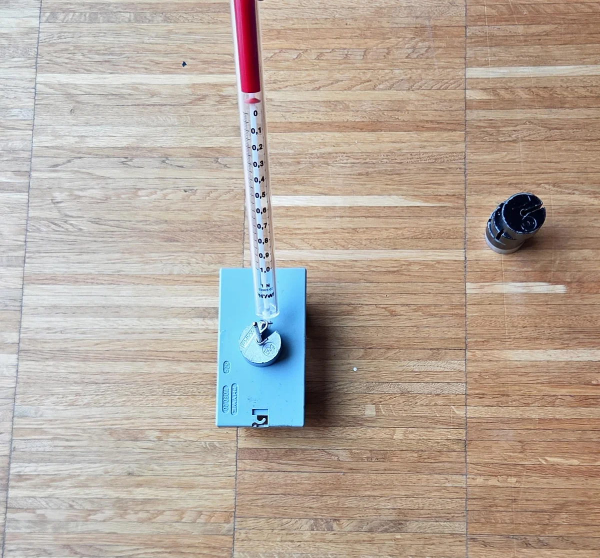

Grundgleichung der Mechanik
Eine resultierende Kraft beschleunigt einen Körper. Die Beschleunigung zeigt in Richtung der resultierenden Kraft. Bei gleicher Kraft beschleunigt ein Körper mit größerer Masse weniger stark.
Versuchsanordnung

Beispiel mit dem Rollwagen
Bei einer resultierenden Kraft von 1,0 N und einer Gesamtmasse von 0,20 kg beträgt die Beschleunigung . Bei doppelter Gesamtmasse und gleicher resultierender Kraft halbiert sich die Beschleunigung.
Rollwagen beladen
Beide Wagen starten aus der Ruhe. Auf jeden wirkt eine resultierende Kraft von 1 N. Vergleiche die nach 0,4 s zurückgelegten Wege.
kg
Verstellbarer Wagen · a = · s = m
Vergleichswagen (0,20 kg) · a = 5 · s = 0,4 m
Vergleiche 0,10 kg mit 0,20 kg. Was passiert mit der Beschleunigung und mit dem Weg nach 0,4 s?